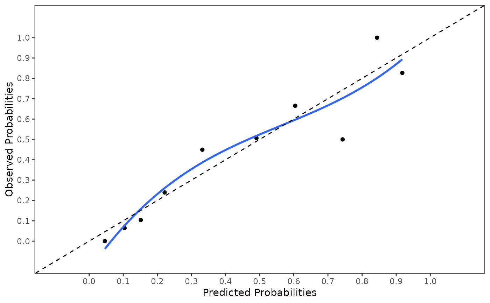

R/mivalext_lr.R
mivalext_lr.Rdmivalext_lr External validation of logistic prediction models
mivalext_lr(
data.val = NULL,
data.orig = NULL,
nimp = 5,
impvar = NULL,
formula = NULL,
lp.orig = NULL,
cal.plot = FALSE,
plot.indiv,
val.check = FALSE,
g = 10,
groups_cal = 10,
plot.method = "mean"
)Data frame with stacked multiply imputed validation datasets. The original dataset that contains missing values must be excluded from the dataset. The imputed datasets must be distinguished by an imputation variable, specified under impvar, and starting by 1.
A single data frame containing the original dataset that was used to develop the model. Used to estimate the original regression coefficients in case lp.orig is not provided.
A numerical scalar. Number of imputed datasets. Default is 5.
A character vector. Name of the variable that distinguishes the imputed datasets.
A formula object to specify the model as normally used by glm.
Numeric vector of the original coefficient values that are externally validated.
If TRUE a calibration plot is generated. Default is FALSE.
This argument is deprecated; please use plot.method instead.
logical vector. If TRUE the names of the predictors of the LP are provided and can be used as information for the order of the coefficient values as input for lp.orig. If FALSE (default) validation procedure is executed with coefficient values fitted in the order as used under lp.orig.
A numerical scalar. Number of groups for the Hosmer and Lemeshow test. Default is 10.
A numerical scalar. Number of groups used on the calibration plot. Default is 10. If the range of predicted probabilities is low, less than 10 groups can be chosen.
If "mean" one calibration plot is generated, first taking the mean of the linear predictor values across the multiply imputed datasets (default), if "individual" the calibration plot in each imputed dataset is plotted, if "overlay" calibration plots from each imputed datasets are plotted in one figure.
A mivalext_lr object from which the following objects
can be extracted: calibrate with information about
mis-calibration in intercept and slope with and without offset procedure,
coef_pooled, coefficients pooled, ROC results as ROC,
R squared results as R2, Hosmer and Lemeshow test as HL_test,
nimp, formula, impvar, val.check, g,
coef.check and groups_cal.
The following information of the externally validated model is provided:
calibrate with information of pooled_int and pooled_slope that is
the pooled linear predictor (LP), after the LP is freely estimated in each external imputed
dataset Outcome ~ a + LP (provides information about miscalibration in intercept
and slope), pooled_offset_int as Outcome ~ a + offset(LP) and
pooled_offset_slope as Outcome ~ a + LP + offset(LP) with information
about miscalibration in intercept and slope separately by using an offset procedure
(see Steyerberg, p. 300), coef_pooled with the pooled coefficients when the model
is freely estimated in imputed datasets, ROC pooled ROC curve (back transformed
after pooling log transformed ROC curves), R2 pooled Nagelkerke R-Square value
(back transformed after pooling Fisher transformed values), HLtest pooled Hosmer
and Lemeshow Test (using function pool_D2). In addition information is provided about
nimp, impvar, formula, val_ckeck, g and coef_check.
When the external validation is very poor, the R2 can become negative due to the poor fit of
the model in the external dataset (in that case you may report a R2 of zero).
F. Harrell. Regression Modeling Strategies. With Applications to Linear Models, Logistic and Ordinal Regression, and Survival Analysis. 2nd Edition. Springer, New York, NY, 2015.
EW. Steyerberg (2019). Clinical Prediction MOdels. A Practical Approach to Development, Validation, and Updating (2nd edition). Springer Nature Switzerland AG.
Van Buuren S. (2018). Flexible Imputation of Missing Data. 2nd Edition. Chapman & Hall/CRC Interdisciplinary Statistics. Boca Raton.
http://missingdatasolutions.rbind.io/
mivalext_lr(data.val=lbpmilr, nimp=5, impvar="Impnr",
formula = Chronic ~ Gender + factor(Carrying) + Function +
Tampascale + Age, lp.orig=c(-10, -0.35, 1.00, 1.00, -0.04, 0.26, -0.01),
cal.plot=TRUE, val.check = FALSE)
#>
#> Pooled performance measures over m = 5 imputed external validation datasets
#> correctly estimated
#>

#> $calibrate
#> Estimate 95% CI L 95% CI U P-val
#> pooled_int -0.0788081 -0.4838591 0.3262428 0.7012108
#> pooled_slope 0.9818332 0.6645742 1.2990921 0.0000000
#> pooled_offset_int -0.0768418 -0.4836964 0.3300127 0.7095419
#> pooled_offset_slope -0.0181668 -0.3354258 0.2990921 0.9098709
#>
#> $coef_pooled
#> (Intercept) Gender factor(Carrying)2 factor(Carrying)3
#> -9.66084 -0.41365 0.92735 1.05231
#> Function Tampascale Age
#> -0.03579 0.25232 -0.01235
#>
#> $ROC
#> 95% Low C-statistic 95% Up
#> C-statistic (logit) 0.7854 0.8551 0.9048
#>
#> $R2
#> [1] 0.46333
#>
#> $HLtest
#> F_value P(>F) df1 df2
#> [1,] 0.10684 0.99901 8 3977692743
#>
#> $nimp
#> [1] 5
#>
#> $impvar
#> [1] "Impnr"
#>
#> $formula
#> Chronic ~ Gender + factor(Carrying) + Function + Tampascale +
#> Age
#> <environment: 0x563b0b2727c0>
#>
#> $val_check
#> [1] FALSE
#>
#> $g
#> [1] 10
#>
#> $coef_check
#> [1] "(Intercept)" "Gender" "factor(Carrying)2"
#> [4] "factor(Carrying)3" "Function" "Tampascale"
#> [7] "Age"
#>
#> $groups_cal
#> [1] 10
#>